一句话概括:DINOv3 要解决的不是「分类精度」——DINOv2 已经够高(IN-ReAL 89.7 线性探测,Table 14)——而是训练越久、模型越大,稠密(patch 级)特征就越崩的退化现象:patch 与 CLS 的余弦相似度随训练单调升高,相似度图从「局部干净」变成「全局糊成一团」,分割/深度/对应全面掉点。DINOv3 的答案是 Gram anchoring:取一个训练早期的 checkpoint 当 Gram 教师,用 patch 特征自相关矩阵(Gram 矩阵)的 Frobenius 距离,把 student 的「patch 间相关性结构」钉死。这一招让 6.7B 的教师模型可以「无限期」训练下去而不掉稠密指标,从而把自监督预训练真正推到了 LLM 那种规模的尺度游戏里。
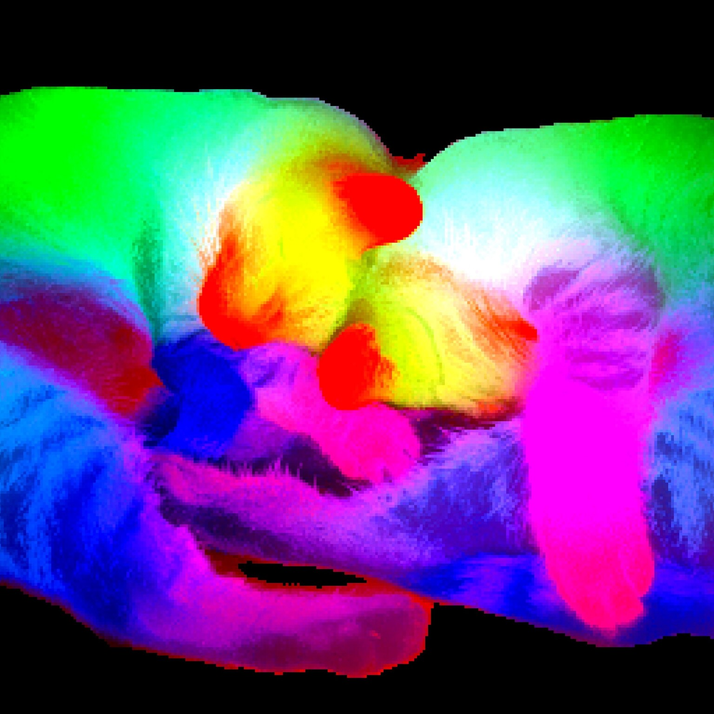
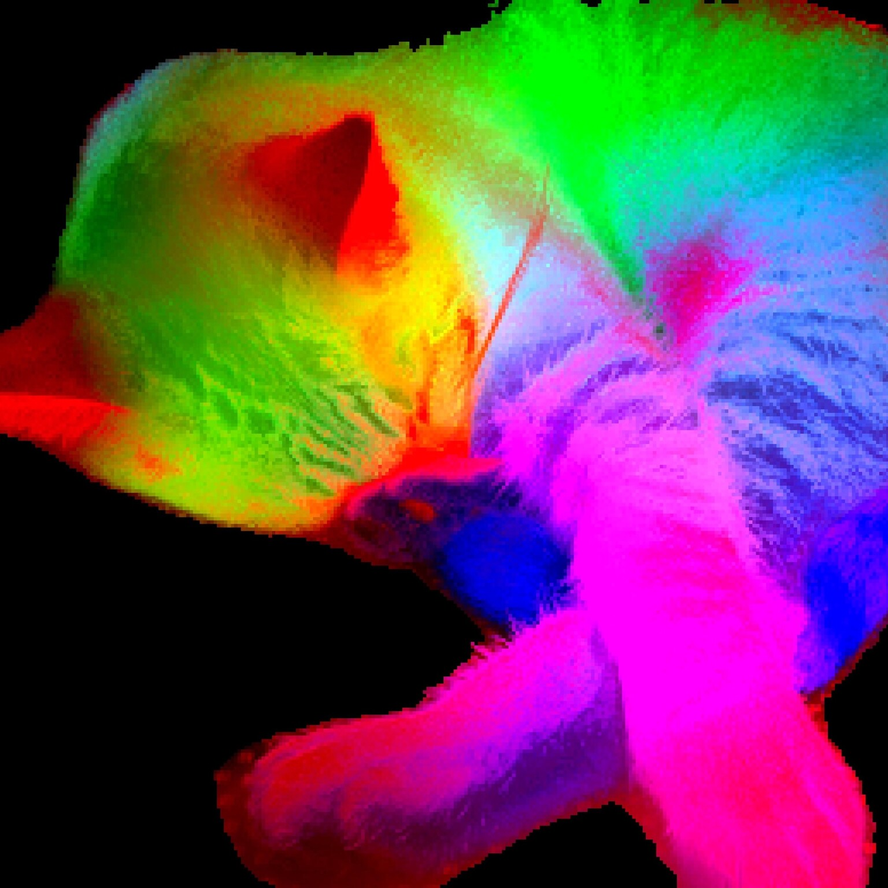
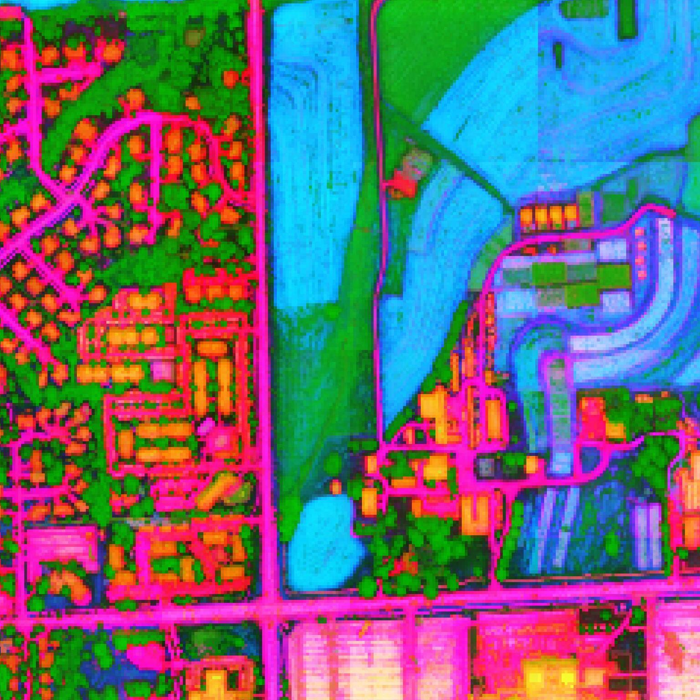
论文把视觉预训练划成三条路线:全监督(SL)、弱监督图文对比(WSL,以 CLIP / SigLIP 2 / Perception Encoder 为代表)、自监督(SSL,以 DINO / iBOT / DINOv2 为代表)。论文在 §2 给出的判断是:SSL 在分类上已经追平甚至超过 WSL(Figure 1a 的 ImageNet-1k 线性探测曲线),但在规模化上落后——"relatively little work has focused on scaling unsupervised image pretraining"。已有的规模化尝试要么撞训练稳定性(Darcet et al., 2025),要么方法过于简化。唯一的例外是 DINOv2(1.1B),能匹配 CLIP 级别的表现;而把 DINOv2 往 7B 扩的尝试(Fan et al., 2025)"在全局任务上有前景,但在稠密预测上结果令人失望"。
论文 §4 的观察链条非常清楚,值得逐层拆开:
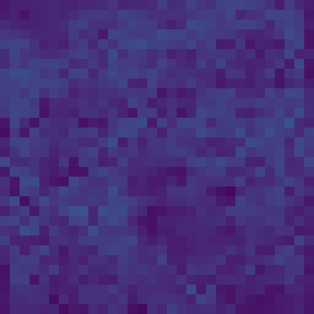
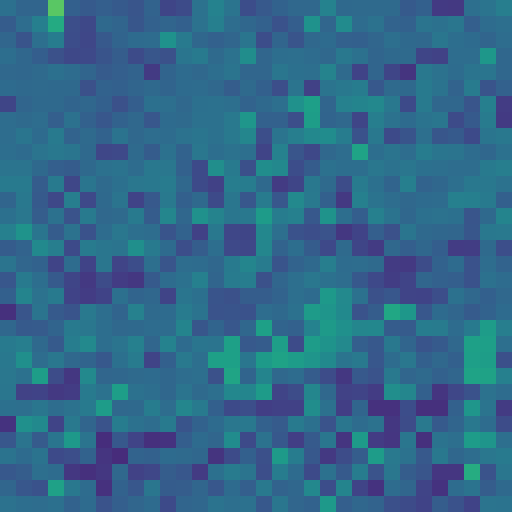
batch_size_per_gpu: 16,合 4096)。每张图取 2 个 global crop(256×256)+ 8 个 local crop(112×112)。| 符号 | 含义 | 维度 / 取值 | 出处 |
|---|---|---|---|
| $I$ | 输入图像 | $256\times256$(global)/ $112\times112$(local) | 源码 yaml crops |
| $X_S$ | student 在 global crop 上的 patch 特征矩阵(送进 Gram 前的表示) | $P\times C$,$C=4096$ | 式 (2) |
| $X_G$ | Gram teacher 在同一 global crop 上的 patch 特征矩阵(冻结) | $P\times C$ | 式 (2) |
| $P$ | patch token 数 | $256/16=16$ → $16\times16=256$(global crop) | 由 patch 16 推出 |
| $X_SX_S^\top$ | student 的 Gram 矩阵(patch 两两内积,即 patch 间相关性结构) | $P\times P$ | 式 (2) |
| $w_{\mathrm{Gram}}$ | Gram 项权重 | 论文 §4.4 写 $w_{\mathrm{Gram}}=2$;yaml 用 schedule 从 0 线性/余弦升到 2.0 | §4.4 / gram_anchor.yaml |
| $\mathcal{M}$ | iBOT 的随机掩码集合 | mask ratio $0.1\sim0.5$ | pretrain.yaml ibot.mask_ratio_min_max |
| $\tau_t,\tau_s$ | teacher / student 温度 | teacher $0.04\to0.07$ | 源码 schedules.teacher_temp |
| $s$ | RoPE-box jitter 的坐标盒子缩放系数 | $s\in[0.5,2]$ | §3.2 / Figure 11 |
| $K$ | prototype 数(DINO / iBOT head) | 256k / 96k | Table 2 |
batch_size_per_gpu: 16,论文 Table 20 记训练用 256 张 H100——$16\times256=4096$,两者自洽。这也说明「batch 4096」不是一个可以随便缩小的数字:它是 256 卡物理配置下的产物。
gram_anchor.yaml 的 it_first_update: 1010000 正对应「第一次 Gram teacher 更新发生在 1.01M 迭代」,即阶段 1 结束之后。阶段 3 是唯一一次分辨率分布改变,论文强调此阶段若不挂 Gram 会显著掉点。蒸馏链与主链解耦:学生面对的是冻教师,不存在 patch 级漂移,所以跳过 Gram。LVD-1689M 不是「更干净的数据集」,而是一个数据混合配方。它的核心主张来自 Table 1 的四路对照:clustering 型 curation 和 retrieval 型 curation 各有强项,把它们混起来才能同时拿到聚类对「细粒度长尾」的增益与检索对「大规模语义」的增益。
| 阶段 | 操作 | 规模 / 超参 | 出处 |
|---|---|---|---|
| 原始池 | Instagram 公开帖(已经过平台级内容审核) | 约 17B 张 | §3.1 |
| Part A · 聚类 | 层次 $k$-means(DINOv2 特征),再用平衡采样 | 5 级,簇数从低到高:200M / 8M / 800k / 100k / 25k | §3.1 |
| Part B · 检索 | 以 seed 数据集为 query,去未筛选池做相似图检索 | 大 seed 用 $k$-NN,小 seed 用 cluster-based | §3.1 |
| Part C · 未筛选保留 | seed 本身直接入库 | — | §3.1 |
| 训练采样 | 整个 curated 语料做单次全局均匀 shuffle | 每张图等概率 | §3.1 |
论文的关键论证在 Table 1。这张表在缩短的 200k 迭代下对照四种数据,并且刻意选了 5 个下游任务来看不同数据配方的偏好(式 1 为记号,用于说明采样分布):
| 数据集 | IN1k k-NN | IN1k Linear | ObjectNet | iNaturalist 2021 | Paris |
|---|---|---|---|---|---|
| Raw(未筛选) | 80.1 | 84.8 | 70.3 | 70.1 | 63.3 |
| Clustering(仅聚类) | 79.4 | 85.4 | 72.3 | 81.3 | 85.2 |
| Retrieval(仅检索) | 84.0 | 86.7 | 70.7 | 86.0 | 82.7 |
| LVD-1689M(本文) | 84.6 | 87.2 | 72.8 | 87.0 | 85.9 |
数据引自论文 Table 1(200k 迭代短程消融)。粗体 = 该列最优,绿底 = 本文配方。
| 项目 | DINOv2(教师) | DINOv3(教师) | 解读 |
|---|---|---|---|
| Backbone | ViT-giant | ViT-7B(自定义) | — |
| #Params | 1.1B | 6.7B | ×6,但深度不变 |
| #Blocks | 40 | 40 | 宽而不深 |
| Patch Size | 14 | 16 | token 数减少约 25%(同分辨率下 $(\frac{14}{16})^2\approx0.766$);推理更省 |
| Pos. Embeddings | Learnable | RoPE(轴向) | 可外推分辨率,这是高分辨率适配的前提 |
| Registers | 4 | 4 | 沿用(抑制 high-norm outlier token) |
| Embed. Dim. | 1536 | 4096 | ×2.67 |
| FFN Type | SwiGLU | SwiGLU | 不变 |
| FFN Hidden Dim. | 4096 | 8192 | ×2 |
| Attn. Heads | 24 | 32 | head 变多 |
| Attn. Head Dim. | 64 | 128 | $32\times128=4096$ ✓ |
| DINO Head | MLP 4096-4096-256 | MLP 8192-8192-512 | head 也同步放大 |
| DINO Prototypes | 128k | 256k | ×2 |
| iBOT Head | MLP 4096-4096-256 | MLP 8192-8192-384 | 瓶颈维 384 |
| iBOT Prototypes | 128k | 96k | 反向缩小(少而精) |
数据引自论文 Table 2。注意 iBOT prototype 从 128k 降到 96k 这个反直觉的改动——和正文不同方向的缩放,说明 patch 级目标并不需要那么大的「码本」。
DINOv3 的 RoPE 实现在标准化到 $[-1,1]$ 的坐标盒上给每个 patch 分配坐标,再在多头注意力里按两个 patch 的相对位置加偏置:
关键在于坐标盒不是固定的,而是训练时随机缩放:
dinov3_vit7b16_pretrain.yaml 里 schedules.lr 的 start / peak / end 全部是 5.0e-05,weight_decay 全是 0.04,只有 teacher_temp 保留 $0.04\to0.07$ 的 warmup 和 momentum 0.994 恒定。这是「先把优化器从变量里摘出去,再让模型和数据去当变量」的思路——也是能放心把训练时长拉到 1M+ 迭代的前提。
不去修单个 patch 的表示,而是直接约束 patch 两两之间的相关性矩阵——用一个训练早期的 checkpoint 当「锚」,把它算出的 Gram 矩阵当作目标,把 student 的 Gram 矩阵往它上面拉。名字里的 anchoring 正是这个意思:锚不在当下,而在过去。
其中 $\mathbf{X}_{\mathrm{S}}$ 是 student 的 patch 特征,$\mathbf{X}_{\mathrm{G}}$ 是 Gram teacher 的特征,$\|\cdot\|_{\text{F}}$ 是 Frobenius 范数。叠加后的总体目标:
backbone_out["x_norm_patchtokens"]。F.interpolate(mode="bicubic", antialias=False) 把 teacher 的 $D\times32\times32$ 特征图下采样到 $16\times16$ 再算 Gram。这个「高分辨率 teacher → 低分辨率 student」的不对称,正是后文 §7 所说「高分辨率 Gram」的实现方式。gram.normalized: true → 两侧特征都先做 $\ell_2$ 归一化,于是 Gram 矩阵退化为余弦相似度矩阵(见下方源码复核)。mse_loss(student_sim, target_sim),其中 $sim=\mathbf{X}\mathbf{X}^\top$。requires_grad_(False))。| 超参 | 取值 | 说明 | 出处 |
|---|---|---|---|
| 起始时机 | 1M 迭代之后 | 原文 "for efficiency, we start only after 1M iterations";yaml it_first_update: 1010000 | §4 / 源码 |
| teacher 更新频率 | 每 10k 迭代 | update_frequency: 10000 | §4 / 源码 |
| 最多更新次数 | 3 次 | max_updates: 3;更新方式是把 EMA 教师权重拷进 Gram 教师 | §4 / 源码 |
| $w_{\mathrm{Gram}}$ | 2 | yaml 用 schedule 从 0 升到 2.0(warmup 1000 epochs) | §4.4 / 源码 |
| 是否归一化 | 是 | normalized: true | 源码 |
| 作用粒度 | 图像级 | img_level: true——每张图内部算 Gram,而不是整个 batch 一起 | 源码 |
| token 子集 | 全部 | tokens_used: all(另有 masked / unmasked 两个未启用的选项) | 源码 |
| 是否裁剪负相似度 | 否 | remove_neg: false——负相似度项照样参与 MSE | 源码 |
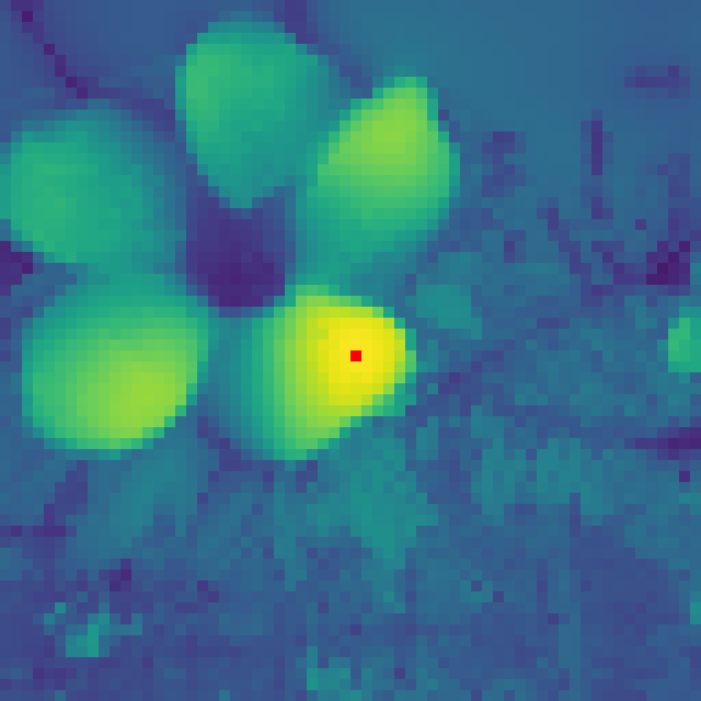
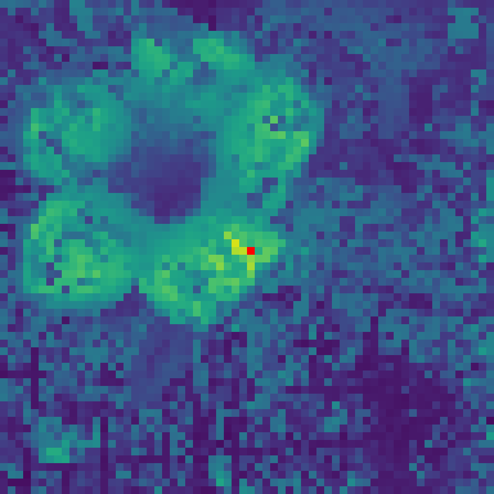
*_yolov3_iter9999_1024_seed1_None.png,取自一个 patch-14 且无 Gram 的长训模型);右:加高分辨率 Gram($\mathcal{L}_{\mathrm{HRef}}$,文件名 *_U1_iter999999_512_seed1.png,取自 DINOv3 系 U1 模型 100 万迭代)后的同类图。对比可见右图的相似度被重新局部化——目标物体区域被清晰点亮,而不是弥散到整幅图像。论文图注:"Qualitative effect of Gram anchoring. We visualize cosine maps before and after using the refinement objective $\mathcal{L}_{\mathrm{HRef}}$. The input resolution of the images is $1024\times1024$ pixels."max_updates: 3 与「每 10k 更新」组合起来,把 Gram teacher 的漂移限制在一个很小的步数内($1.01\text{M}\to1.03\text{M}$),与这个结论自洽。
GramLoss.forward(src_dino/dinov3/loss/gram_loss.py:34-84)在算相似度矩阵之前先对两侧特征做了 F.normalize(feats, dim=-1)(L55 / L66,由 apply_norm=<cfg.gram.normalized>=true 控制)。torch.nn.MSELoss()(L24),即 $\frac{1}{P^2}\sum_{i,j}(\cdot)^2$;而式 (2) 写的是 Frobenius 范数的平方 $\sum_{i,j}(\cdot)^2$。二者只差一个常数 $1/P^2$,乘进 $w_{\mathrm{Gram}}$ 后被吸收,数值上等价。remove_neg: false,只有 remove_neg/remove_only_teacher_neg 两个开关的代码分支,L75-L82),而论文未提及这个选项。这在「读论文以为只约束正相关」和「实际代码把负相关也一起拉」之间划出一条不可忽略的界线。预训练全程在 $256\times256$ 的 global crop 上跑,但下游用途(PCA 可视化、分割、深度、前馈重建的输入)动辄 $1024$ 甚至 $4096$。直接把 RoPE 模型推到大分辨率当然能跑,但稠密特征的语义质量会漂。DINOv3 的解法是在预训练之后再加一个短阶段:改变 global / local / Gram teacher 三种 crop 的分辨率分布,让模型重新适应。
| 项目 | 取值 | 出处 |
|---|---|---|
| 迭代数 | 10k 额外迭代 | §5.1 |
| global crop 尺寸集合 | {512, 768} | §5.1 / 源码 |
| local crop 尺寸集合 | {112, 168, 224, 336} | §5.1 |
| Gram teacher crop 尺寸 | 512 / 1152(随配比) | §4.4 概率表 |
| 是否仍挂 Gram | 是,且必需 | §5.1 |
论文 §4.4 给出了 (global, local, Gram teacher) 三元组的采样概率表,这正是「高分辨率 Gram」的工程实现:
注意 Gram teacher 的尺寸始终大于等于 student 的 global crop(768 vs 512、1152 vs 768),也就是「用更精细的教师网格去监督更粗的学生网格」——这与 §6 里 bicubic 下采样的方向一致。
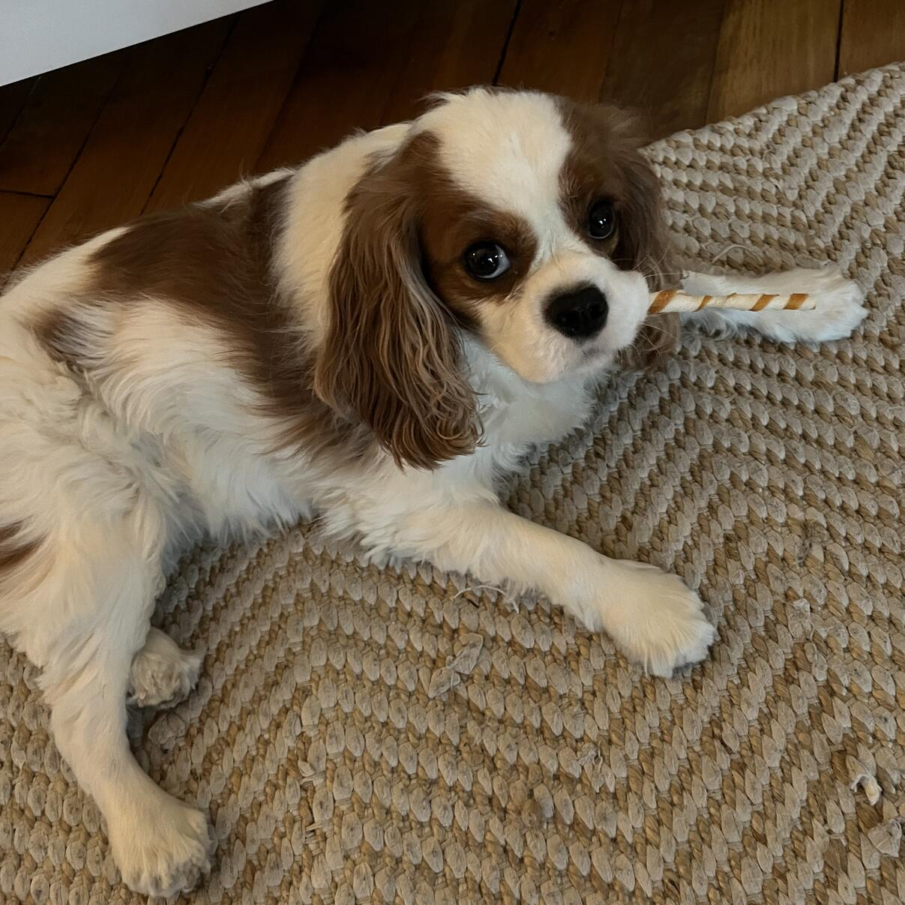
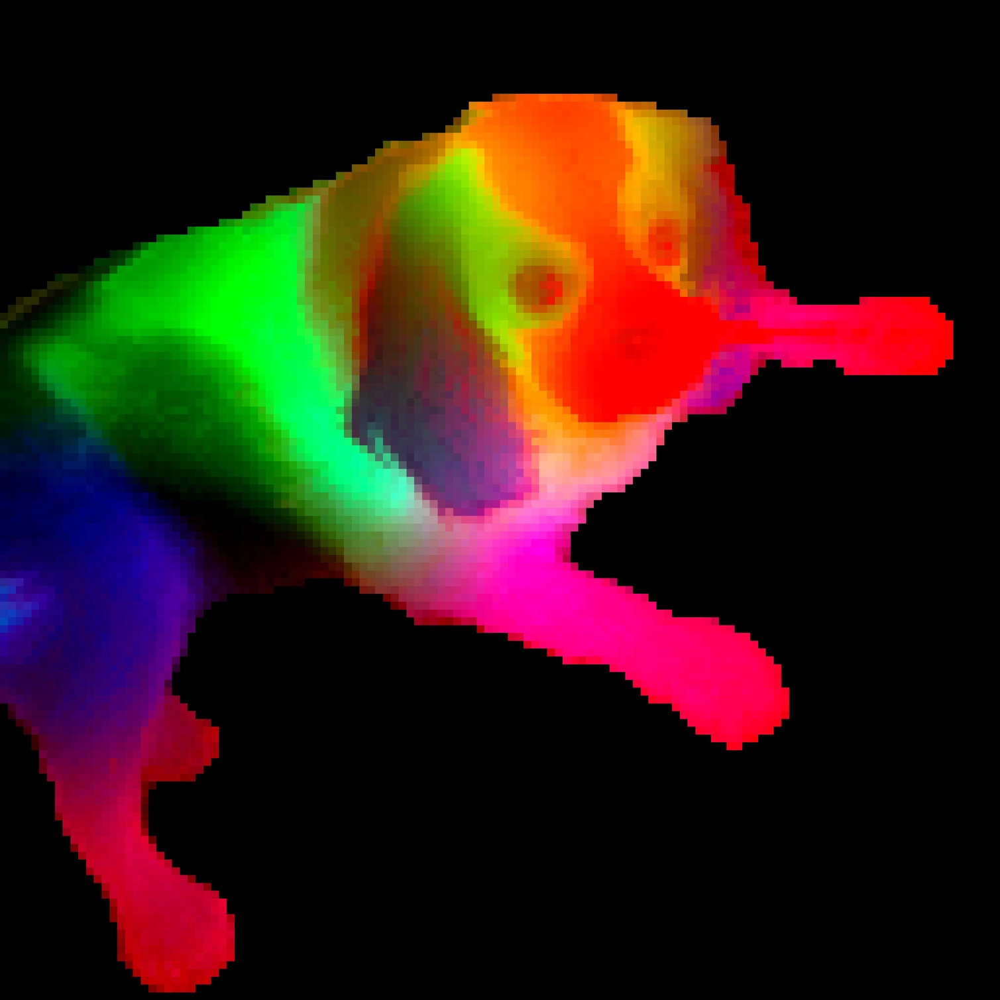
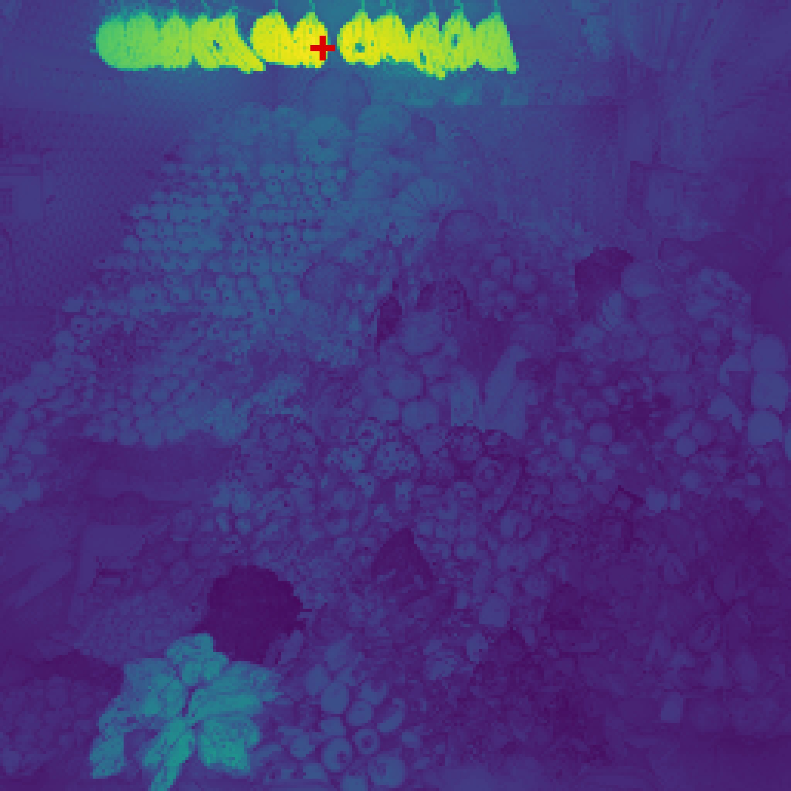
6.7B 的教师没法直接部署,所以 DINOv3 用固定教师(而非 DINOv2 的 EMA 教师)把它蒸馏成五档 ViT + 四档 ConvNeXt。关键设计决定是跳过 Gram——因为教师是冻的,不存在 patch 级漂移这个病,药自然也就不需要。
| 模型 | 参数量 | GFLOPs @256 | GFLOPs @512 | 备注 |
|---|---|---|---|---|
| ConvNeXt-Tiny | 29M | 5 | 20 | CNN 路线,极小算力 |
| ConvNeXt-Small | 50M | 11 | 46 | |
| ConvNeXt-Base | 89M | 20 | 81 | |
| ConvNeXt-Large | 198M | 38 | 152 | |
| ViT-S/16 | 21M | 12 | 63 | 最小可用 ViT |
| ViT-S+/16 | 29M | 16 | 79 | 自定义档 |
| ViT-B/16 | 86M | 47 | 216 | 社区最常用 |
| ViT-L/16 | 300M | 163 | 721 | 性价比甜点 |
| ViT-H+/16 | 840M | 450 | 1903 | 自定义档 |
| ViT-7B/16 | 6716M | 3550 | 14515 | 教师本体,权重需申请 |
数据引自论文 Figure 16(a)。数值对照:ViT-L/16 的 163 GFLOPs @256 只有 7B 教师(3550)的 4.6%,而 Table 14 显示它在多数密集任务上已接近教师——这是「蒸馏 + 冻结编码器」路线在工程上成立的根本原因。
facebook/dinov3-{vits16,vits16plus,vitb16,vitl16,vith16plus}-pretrain-lvd1689m)。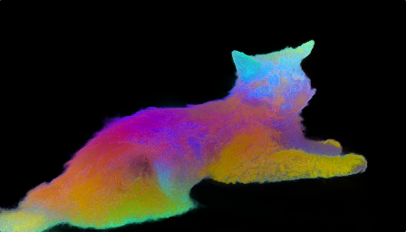
vitb4096_cat_marc_pca_rgb.png)。论文对本图的完整描述:"Stability of the features at multiple resolutions for the DINOv3 ViT family of models. Top-to-bottom: ViT-S, S+, B, L, H+. We run inference on an image at multiple resolutions, then perform principal component analysis on the features computed on a $1792\times1024$ image ($112\times64$ image tokens). We then project features at all resolutions onto the principal components 5–7 that we map to the RGB space for visualization. While the models are functional at all resolutions, we observe that the features remain consistent across a large range of resolutions before drifting: for example, ViT-S+ features are stable between $896\times512$ and $3584\times2048$ inputs, while ViT-L barely starts drifting on the largest resolution $7168\times4096$. ViT-H+ remains stable throughout the whole tested range."| 阶段 | 损失 | 数学形式 | 权重 | 出处 |
|---|---|---|---|---|
| 阶段 1 预训练 (1M iter) | DINO(图像级) | $\mathcal{L}_{\mathrm{DINO}}$:CLS 与 prototype 的交叉熵,teacher 用 Sinkhorn-Knopp 居中 | 1.0 | 式 (1) / 源码 dino.loss_weight |
| iBOT(patch 级) | $\mathcal{L}_{\mathrm{iBOT}}$:随机掩码 patch 的 latent 重建 | 1.0(mask ratio $0.1\!\sim\!0.5$) | 式 (1) / 源码 ibot.loss_weight | |
| DKoLeo | $\mathcal{L}_{\text{DKoLeo}}$:特征分散度正则($k$-NN 距离) | 0.1 | 式 (1) / 源码 koleo_loss_weight | |
| 阶段 2 Gram anchoring (+100k iter) | Gram | $\mathcal{L}_{\text{Gram}}=\|\mathbf{X}_S\mathbf{X}_S^\top-\mathbf{X}_G\mathbf{X}_G^\top\|_F^2$ | 2(schedule 从 0 升到 2) | 式 (2) / 源码 gram.loss_weight_schedule |
| 阶段 3 高分辨率 (+10k iter) | 同阶段 2 | $\mathcal{L}_{\mathrm{Ref}}$ 全式 | 同上 + Gram teacher 取 2× 分辨率特征 | 式 (3) / §5.1 |
| 蒸馏 | 同阶段 1 | $\mathcal{L}_{\mathrm{Pre}}$,教师固定 | 同阶段 1 | §5.2 |
dinov3_vit7b16_gram_anchor.yaml 与 pretrain.yaml 对照):
loss_weight_schedule: {start: 0, peak: 0, end: 2.0, warmup_epochs: 1000, cosine_epochs: 1}——即从 0 出发、经 1000 个 epoch 的 warmup 后余弦升到 2.0。这解释了为什么早期介入会让训练不稳:loss 权重本身是从 0 缓升的。dino.reweight_dino_local_loss: true,配 local_loss_weight_schedule: {start: 1, peak: 1, end: 0.5, ...}——refinement 阶段把 local crop 上的 DINO 损失权重从 1 降到 0.5。【推测】合理的解释是:此时模型已经在主攻 patch 级一致性(靠 Gram),而 local crop 上的图像级目标是"反方向"的,故降权。论文正文未提及这一条,属于只能在源码里读到的实现细节。facebookresearch/dinov3 的 git clone --depth 1(克隆于 2026-10-16,核对后副本已清理)。下文 file:line 均为该次克隆的实际行号,可对照 upstream 仓库逐行核对。dinov3/configs/train/dinov3_vit7b16_pretrain.yaml)| 键 | 值 | 意义 |
|---|---|---|
student.arch | vit_7b | 自定义架构名(非 timm 内置) |
student.patch_size | 16 | 与 DINOv2 的 14 不同,token 数少约 23.4% |
student.ffn_layer | swiglu64 | SwiGLU,ratio 64/…(配合 ffn_ratio: 3 得到 hidden 8192) |
student.qkv_bias | false | QKV 无偏置(与 ViT-L 蒸馏档相反,见 11.4) |
student.n_storage_tokens | 4 | 即 4 个 registers |
student.pos_embed_type | rope | 轴向 RoPE |
pos_embed_rope_base | 100 | RoPE 频率基 |
pos_embed_rope_normalize_coords | separate | 坐标归一化按轴分开 |
pos_embed_rope_rescale_coords | 2 | 坐标重标定倍率 |
pos_embed_rope_dtype | fp32 | RoPE 用 fp32 算(其余走 bf16),位置精度不能省 |
student.fp8_enabled | true | 块级 FP8(fp8_filter: blocks)——能上 256 卡跑 1M 迭代的关键之一 |
student.layerscale | 1.0e-05 | 极小的 LayerScale 初值(与 LingBot-Vision 一致) |
student.drop_path_rate | 0.4 | 高 drop path,大模型正则 |
dino.head_n_prototypes | 262144 | 256k prototypes |
dino.head_bottleneck_dim / head_hidden_dim / head_nlayers | 512 / 8192 / 3 | 对应论文 Table 2 的 "MLP 8192-8192-512" |
dino.koleo_loss_weight | 0.1 | KoLeo 权重 |
ibot.mask_ratio_min_max | [0.1, 0.5] | iBOT 掩码比例区间 |
ibot.mask_sample_probability | 0.5 | 一半的 crop 施加掩码 |
ibot.head_n_prototypes | 98304 | 96k(比 DINO 头少) |
train.batch_size_per_gpu | 16 | ×256 GPU = 4096 全局 batch |
train.centering | sinkhorn_knopp | 用 SwAV 的 Sinkhorn-Knopp 替代 DINO 的 centering(论文 Table 2 亦提及) |
train.checkpointing / compile | true / true | 梯度检查点 + torch.compile 默认开 |
optim.optimizer | adamw | β₁=0.9,β₂=0.99(adamw_beta1/2) |
optim.scaling_rule | sqrt_wrt_1024 | LR 按 $\sqrt{\text{bs}/1024}$ 缩放 |
optim.layerwise_decay | 0.98 | 逐层 LR 衰减(Swin 式) |
optim.patch_embed_lr_mult | 0.2 | patch embed 的学习率乘 0.2 |
optim.clip_grad | 30.0 | 梯度裁剪 |
schedules.lr | start/peak/end = 5.0e-05,warmup 100 epochs,freeze_last_layer 5 | 常数 LR(无 cosine 全程衰减) |
schedules.weight_decay | start/peak/end = 0.04 | 常数 WD |
schedules.teacher_temp | 0.04 → 0.07(warmup 100 epochs) | 唯一保留的调度之一 |
schedules.momentum | 0.994 恒定 | EMA 动量 |
crops | global 256(scale 0.32–1.0)×2 + local 112(scale 0.05–0.32)×8 | 与论文一致 |
crops.rgb_mean/std | ImageNet 统计量(0.485/0.456/0.406;0.229/0.224/0.225) | SAT-493M 版另用一组统计量 |
dinov3/configs/train/dinov3_vit7b16_gram_anchor.yaml)gram:
use_loss: true # ← 阶段 1 的 pretrain.yaml 里是 false
loss_weight: 1.0 # 被下面的 schedule 覆盖
ema_teacher: false # 用独立冻结的 gram_teacher,而非 EMA 教师
ckpt: ignore # ← 占位值,复现时必须替换成真实 checkpoint 路径
it_load_ema_teacher: -1 # ← 占位值;与 ckpt 二选一必须给
rep_update: true # 允许更新 gram teacher 权重
update_frequency: 10000 # 每 10k 迭代更新一次
it_first_update: 1010000# 首次更新在 1.01M 迭代 → 即阶段 1 跑完之后
max_updates: 3 # 最多更新 3 次
normalized: true # ← 关键:L2 归一化后才算 Gram(即余弦相似度矩阵)
img_level: true # 每张图内部算 Gram
remove_neg: false # 不裁剪负相似度
remove_only_teacher_neg: false
tokens_used: all
global_teacher_resize_method: bicubic
global_teacher_resize_antialias: false
loss_weight_schedule:
start: 0
peak: 0
end: 2.0 # ← 最终权重 2.0,对应论文 w_Gram = 2
warmup_epochs: 1000
cosine_epochs: 1
crops:
global_crops_size: 256
local_crops_size: 112
gram_teacher_crops_size: 512 # ← Gram 教师看到的是 2× 分辨率的 crop
gram_teacher_no_distortions: true
dino:
reweight_dino_local_loss: true # ← 阶段 1 没有的开关
local_loss_weight_schedule:
start: 1
peak: 1
end: 0.5 # ← local crop 的 DINO 损失权重从 1 降到 0.5
optim:
epochs: 1200 # ← 阶段 1 是 1000
schedules:
lr: {start: 0, peak: 3.0e-05, end: 3.0e-05, warmup_epochs: 100}
momentum: {start: 0.999, peak: 0.999, end: 0.999} # ← 阶段 1 是 0.994gram.ckpt: ignore 与 gram.it_load_ema_teacher: -1 都不能直接用。源码 src_dino/dinov3/train/ssl_meta_arch.py:218-225 里有两条硬断言:
# L218-221
if self.gram_ema_teacher and self.gram_ckpt is not None:
raise ValueError("Cannot use both `gram.ema_teacher` and `gram.ckpt` at the same time. ...")
# L222-225
if self.gram_ckpt is None and self.gram_it_load_ema_teacher < 0:
raise ValueError("If no gram checkpoint is provided, "
"`gram.it_load_ema_teacher` must be set to a non-negative value.")| 位置 | 事实 |
|---|---|
dinov3/loss/gram_loss.py:11 | class GramLoss(nn.Module),文件仅 84 行——整个核心创新在代码层面的分量就是这么小 |
gram_loss.py:24 | self.mse_loss = torch.nn.MSELoss()(而非直接写 Frobenius 范数) |
gram_loss.py:50-51 | 两侧特征先 .float() 升精度再算——Gram 矩阵在 fp32 下计算,避免 bf16 下的精度损失(与 pos_embed_rope_dtype: fp32 是同一类考量) |
gram_loss.py:54-55 / 65-66 | if self.apply_norm: F.normalize(feats, dim=-1)——先 L2 归一化再算相似度矩阵 |
gram_loss.py:62 / 73 | torch.matmul(f, f.transpose(-1,-2)) 得到 $P\times P$ 相似度矩阵 |
gram_loss.py:75-82 | remove_neg / remove_only_teacher_neg 两个互斥开关(发布配置里都是 false,即不裁剪) |
gram_loss.py:84 | return self.mse_loss(student_sim, target_sim) |
ssl_meta_arch.py:20 | from dinov3.loss import DINOLoss, GramLoss, KoLeoLoss, ... |
ssl_meta_arch.py:55-59 | Gram teacher 用 build_model_from_cfg(cfg, only_teacher=True) 单独构建一份 backbone,存入 gram_model_dict["backbone"]——确实是一份独立权重,不是 EMA 教师的视图 |
ssl_meta_arch.py:181 | self.gram_teacher.requires_grad_(False)——梯度完全不进 teacher |
ssl_meta_arch.py:476-491 | get_gram_teacher_output:student 侧取 student_global["patch_pre_head"],teacher 侧取 backbone_out["x_norm_patchtokens"] |
ssl_meta_arch.py:494-506 | F.interpolate(..., size=(N_student, N_student), mode=<cfg.gram.global_teacher_resize_method>, align_corners=False, antialias=...)——教师特征网格下采样到学生网格,这就是「高分辨率 Gram」 |
ssl_meta_arch.py:690-699 | 从 self.model_ema.state_dict() 按前缀挑键灌进 gram_teacher,随后 requires_grad_(False) + .eval() |
ssl_meta_arch.py:713-726 | update_ema:torch._foreach_mul_(t, m); torch._foreach_add_(t, s, alpha=1-m) |
ssl_meta_arch.py:728-745 | update_gram:同样的 EMA 写法,但源是 self.teacher、目标是 self.gram_teacher——与 DINOv3 的「伪代码」一致的极简实现 |
DINOv3 的蒸馏档 vitl_im1k_lin834.yaml 与教师档 dinov3_vit7b16_pretrain.yaml 在配置上存在几处系统性差异(下表由官方仓库内多个 yaml 横向对照得出,非论文所述):
| 键 | ViT-7B 教师 | ViT-L 蒸馏(ImageNet-1k) |
|---|---|---|
student.arch | vit_7b | vit_large |
student.ffn_layer | swiglu64 | swiglu(标准倍率) |
student.drop_path_rate | 0.4 | 更小(蒸馏档普遍降) |
train.batch_size_per_gpu | 16 | 16(同) |
crops.global_crops_size | 256 | 256(同) |
| 阶段数 | 3(含 Gram) | 1(无 Gram) |
python -m dinov3.run.submit dinov3/train/train.py --nodes 4 --config-file dinov3/configs/train/vitl_im1k_lin834.yaml ...ai.meta.com/resources/models-and-libraries/dinov3-downloads/ 申请制。想做「用 7B 编码器」的实验,先确认能拿到权重。torch.compile + FP8 组合大概率要重做。fp8_enabled: true 是训练效率选项(block 级 FP8);推理侧不涉及,但若要在消费级卡上重训大档位,需确认目标硬件是否支持 FP8,否则要手动关掉。【待核实】官方未给出关闭 FP8 后的等效超参。| 类别 | 方法 | ViT | ADE20k ↑ | Citysc. ↑ | VOC ↑ | NYUv2 ↓ | KITTI ↓ |
|---|---|---|---|---|---|---|---|
| Agglomerative | AM-RADIOv2.5 | g/14 | 53.0 | 78.4 | 85.4 | 0.340 | 2.918 |
| PEspatial | G/14 | 49.3 | 73.2 | 82.7 | 0.362 | 3.082 | |
| Weakly-sup. | SigLIP 2 | g/16 | 42.7 | 64.8 | 72.7 | 0.494 | 3.273 |
| PEcore | G/14 | 38.9 | 61.1 | 69.2 | 0.590 | 4.119 | |
| Self-sup. | Franca | g/14 | 46.3 | 68.7 | 82.9 | 0.445 | 3.140 |
| DINOv2 | g/14 | 49.5 | 75.6 | 83.1 | 0.372 | 2.624 | |
| Web-DINO | 7B/14 | 42.7 | 68.3 | 76.1 | 0.466 | 3.158 | |
| Self-sup. | DINOv3 | 7B/16 | 55.9 | 81.1 | 86.6 | 0.309 | 2.346 |
这一节是本库最关心的——它衡量的正是「特征里有没有携带 3D 感知」。协议沿用 Probe3D,指标是 correspondence recall。
| 方法 | ViT | NAVI(几何) | SPair(语义) |
|---|---|---|---|
| AM-RADIOv2.5 | g/14 | 59.4 | 56.8 |
| PEspatial | G/14 | 53.8 | 49.6 |
| SigLIP 2 | g/16 | 49.4 | 42.6 |
| PEcore | G/14 | 39.9 | 23.1 |
| Franca | g/14 | 54.6 | 51.0 |
| DINOv2 | g/14 | 60.1 | 56.1 |
| Web-DINO | 7B/14 | 55.0 | 32.2 |
| DINOv3 | 7B/16 | 64.4 | 58.7 |
论文的两个论断都成立:几何对应上 "improves over the second best model (DINOv2) by 4.3% recall"(64.4 − 60.1 = 4.3 ✓);语义对应上 "+2.6%"(58.7 − 56.1 = 2.6 ✓)。论文还点名批评弱监督模型 "do not fare well on this task, indicating a lack of 3D awareness"——这是一个很值得记下来的判断:3D 感知在自监督目标里,不在图文对比目标里。
| 方法 | DAVIS S/M/L | YouTube-VOS S/M/L | MOSE S/M/L |
|---|---|---|---|
| AM-RADIOv2.5 g/14 | 66.5 / 77.3 / 81.4 | 70.1 / 78.1 / 79.2 | 44.0 / 52.6 / 54.3 |
| PEspatial G/14 | 68.4 / 74.5 / 70.5 | 68.5 / 67.5 / 55.6 | 39.3 / 40.2 / 34.0 |
| PEcore G/14 | 48.2 / 53.1 / 49.8 | 34.7 / 33.0 / 25.3 | 17.8 / 19.0 / 15.4 |
| Franca g/14 | 61.8 / 66.9 / 66.5 | 67.3 / 70.5 / 67.9 | 40.3 / 42.6 / 41.9 |
| DINOv2 g/14 | 63.9 / 73.6 / 76.6 | 65.6 / 73.5 / 74.6 | 40.4 / 47.6 / 48.5 |
| DINOv3 7B/16 | 71.1 / 79.7 / 83.3 | 74.1 / 80.2 / 80.7 | 46.0 / 53.9 / 55.6 |
论文称 DAVIS-L 上 "83.3 $\mathcal{J}\&\mathcal{F}$, 6.7 points above DINOv2" → 83.3 − 76.6 = 6.7 ✓。另一个值得注意的现象是分辨率单调性:论文写 "performance as a function of resolution follows a healthy trend... In contrast, performance at higher resolutions stays almost flat for SigLIP 2 and PEcore, and degrades for PEspatial."——PEspatial 在 YouTube-VOS 上从 S 的 68.5 掉到 L 的 55.6,是「高分辨率下特征崩溃」的典型症状。这正是 Gram anchoring 要解决的问题,而 DINOv3 是表里唯一在所有分辨率下单调上升的自监督模型。
| 方法 | UCF101 | SSv2 | K400 |
|---|---|---|---|
| V-JEPA 2 g/16 | 94.0 / 93.8 | 73.8 / 75.4 | 83.3 / 84.3 |
| DINOv2 g/14 | 93.5 / 93.8 | 67.4 / 68.4 | 84.4 / 85.6 |
| DINOv3 7B/16 | 93.5 / 93.5 | 70.1 / 70.8 | 87.8 / 88.2 |
格式:单 clip / TTA。论文坦承在 SSv2(运动理解)上 "the dedicated video model V-JEPA v2 shines";但 K400 上 DINOv3 反超 V-JEPA 2 达 4.5 个点。一个从未见过视频的图像模型能做到这点,说明 patch 级时空一致性已经隐含在稠密特征里。
| 方法 | Val | V2 | R | A | C↓ | Obj. |
|---|---|---|---|---|---|---|
| SigLIP 2 g/16 | 89.1 | 81.6 | 92.2 | 71.8 | 30.0 | 78.6 |
| DINOv2 g/14 | 87.3 | 79.5 | 81.1 | 65.4 | 24.1 | 66.4 |
| DINOv3 7B/16 | 88.4 | 81.4 | 91.1 | 71.3 | 19.6 | 79.0 |
DINOv3 在 Val 上略低于 SigLIP 2(88.4 vs 89.1),但在全部 5 个鲁棒性维度上领先,其中 ImageNet-R 从 DINOv2 的 81.1 跳到 91.1(+10.0)、ObjectNet 从 66.4 跳到 79.0(+12.6)。论文 §8 的评价是 "our models achieve similar results on classification tasks, making them the optimal choice across compute budgets"。
这是全篇对「前馈重建能不能只换编码器」最有说服力的一张表。同一套 Depth Anything V2 框架,一列是 🔥 需要微调,一列是 ❄ 完全冻结:
| 方法 | 是否微调 | NYUv2 ARel↓ / δ₁↑ | KITTI | ETH3D | ScanNet | DIODE |
|---|---|---|---|---|---|---|
| DPT | 🔥 | 9.8 / 90.3 | 10.0 / 90.1 | 7.8 / 94.6 | 8.2 / 93.4 | 18.2 / 75.8 |
| Marigold | 🔥 | 5.5 / 96.4 | 9.9 / 91.6 | 6.5 / 96.0 | 6.4 / 95.1 | 30.8 / 77.3 |
| DAv2 (ViT-g) | 🔥 | 4.4 / 97.9 | 7.5 / 94.7 | 13.1 / 86.5 | — | — |
| DINOv3 | ❄ 冻结 | 4.3 / 98.0 | 7.3 / 96.7 | 5.4 / 97.5 | 4.4 / 98.1 | 25.6 / 82.2 |
这是 Meta 自己做的、跨到 3D 重建领域的实验。做法极其简单:"Simply by swapping DINOv2 for DINOv3 ViT-L as the image feature extractor in the VGGT pipeline"——其余一切不变,包括 VGGT 自己的聚合器与训练数据。
| 方法 | Re10K 位姿 AUC@30 | CO3Dv2 位姿 AUC@30 | DTU Acc↓ | DTU Comp↓ | DTU Overall↓ | ScanNet-1500 AUC@5 / @10 |
|---|---|---|---|---|---|---|
| CUT3R | 75.3 | 82.8 | — | — | — | — |
| FLARE | 78.8 | 83.3 | — | — | — | — |
| VG GSfM v2 | 78.9 | 83.4 | — | — | — | — |
| VGGT(原生,DINOv2) | 85.3 | 88.2 | 0.389 | 0.374 | 0.382 | 33.9 / 55.2 |
| VGGT + DINOv3 ViT-L | 86.3 | 89.6 | 0.375 | 0.361 | 0.368 | 35.2 / 56.1 |
数据引自论文 Table 13。论文原文:"we are able to obtain state-of-the-art results on various 3D geometry tasks"。
这是全篇最有价值的一张消融表,因为它同时回答了「Gram 到底值多少」和「Gram teacher 该选哪一档」两个问题。协议是让模型在退化后继续训练,比较不同 Gram 配置的恢复效果:
| 配置 | Gram teacher 迭代 | Gram 分辨率倍率 | IN1k Linear ↑ | ADE20k mIoU ↑ | NYU RMSE ↓ |
|---|---|---|---|---|---|
| Baseline(无 Gram) | — | — | 88.2 | 50.3 | 0.307 |
| GRAM 200k | 200k | ×1 | 88.0 | 53.6 | 0.285 |
| GRAM 200k | 200k | ×2(高分辨率) | 88.0 | 55.7 | 0.281 |
| GRAM 100k | 100k | ×2 | 87.9 | 55.7 | 0.284 |
| GRAM 1M | 1M(最晚) | ×2 | 88.1 | 54.9 | 0.290 |
数据引自论文 Figure 9(b) 的内嵌表格。
论文原文:"incorporating Gram anchoring leads to significant improvements on dense tasks within the first 10k iterations. We also see notable gains on the ADE20k benchmark following the Gram teacher updates."——三个关键信息:① 前 10k 迭代内就开始涨点;② 每次 Gram teacher 更新(每 10k)之后 ADE20k 都会再跳一下;③ 更长的训练继续提升 ObjectNet,而其他全局 benchmark 对 Gram 反应温和。
论文原文:"applying the Gram objective significantly influences the iBOT loss, causing it to decrease more rapidly... the Gram and iBOT objectives impact the features in a similar way, whereas the DINO losses affect them differently."——Gram 和 iBOT 在优化同一类东西(patch 级结构),DINO 在优化另一类东西(图像级语义)。这是「为什么 Gram 能修稠密而不伤分类」的机制性解释。
见 §4 的 Table 1 分析。结论:聚类与检索的强项互补,混合配方在 5 个下游任务上全部第一。
Table 2 本质上是「DINOv2 ViT-g → DINOv3 ViT-7B」的一次受控变量对比:深度固定 40 层,只动宽度(patch 16 / embed 4096 / 32 头 × 128 维)、位置编码(Learnable → RoPE)、prototype 数(128k→256k / 128k→96k)。论文没有给这一组改动的逐项 ablation 表,而是把它们作为「规模化设计」整体呈现。【存疑】因此无法从论文判断哪一项改动贡献最大——尤其是 RoPE 与 patch 16 这两项,对下游 3D 任务的实际影响可能在 VGGT 类实验中比在 ImageNet 上更显著。
见 §8 图6。关键数字:ViT-S+ 在 $896\times512$ 到 $3584\times2048$ 之间稳定;ViT-L 直到 $7168\times4096$ 才开始漂;ViT-H+ 在整段测试范围内都稳定。这条曲线直接给出了「每档模型能安全外推多高分辨率」的预算表。
下表按同一组维度横评 9 个候选基座。选择这几个方法的理由是它们都在本库 §15 的候选名单里出现过,或者是前馈重建这条线的事实基线。所有「稠密」列均为冻结 backbone 线性探测口径。
| 方法 | 范式 | 参数量 | patch | 训练数据 | ADE20k↑ | NYU↓ | NAVI↑ | 训练算力 | 权重开放度 |
|---|---|---|---|---|---|---|---|---|---|
| DINOv3 | 自监督(DINO+iBOT+KoLeo) + Gram anchoring | 6.7B (7B/16) | 16 | LVD-1689M(私有,17B 池筛选) | 55.9 | 0.309 | 64.4 | 61,440 GPU-h (256×H100) | 蒸馏档全开; 7B 需申请 |
| DINOv2 | 自监督(DINO+iBOT) | 1.1B (ViT-g/14) | 14 | LVD-142M(私有) | 49.5 | 0.372 | 60.1 | 22,016 GPU-h (A100-40GB) | ✅ 完全开放 |
| LingBot-Vision | 自监督 + masked boundary modeling | 1.1B (ViT-g/16) | 16 | 160.75M(自建,5/6 retrieval) | 53.5 | 0.296 | — | 300k+100k+100k 迭代,batch 3072 | ✅ 代码+权重开放 |
| V-JEPA 2.1 | 视频自监督(JEPA 预测式) | 2B (ViT-G/16) | 16 | 视频为主 | 47.9 | 0.307 | — | 未在本文对照 | ✅ 开放 |
| AM-RADIOv2.5 | 蒸馏式聚合(从 SAM 等监督模型蒸馏) | 1B (g/14) | 14 | 多教师蒸馏 | 53.0 | 0.340 | 59.4 | 不适用(蒸馏) | ✅ 开放 |
| PEspatial | 弱监督(Perception Encoder 空间版) | 2B (G/14) | 14 | 图像-文本 + 视频蒸馏 | 49.3 | 0.362 | 53.8 | 86B 样本级(PE 主线) | ✅ 开放 |
| SigLIP 2 | 弱监督(图文对比 + 多目标) | 1B (g/16) | 16 | 40B+ 图文对 | 42.7 | 0.494 | 49.4 | 未在本文对照 | ✅ 开放 |
| PEcore | 弱监督(纯图文对比) | 2B (G/14) | 14 | 40B+ 图文对 | 38.9 | 0.590 | 39.9 | 未在本文对照 | ✅ 开放 |
| Web-DINO | 自监督(DINO 目标,试图复现 DINOv2) | 7B (/14) | 14 | 网络公开图文 | 42.7 | 0.466 | 55.0 | 未在本文对照 | ✅ 开放 |
ADE20k / NYU / NAVI 数据统一引自 DINOv3 论文 Table 2(稠密线性探测);算力数据引自 DINOv3 论文 Table 20 与各自原文。LingBot-Vision 行的 ADE20k/NYU 引自其论文 Table 2(评估口径同为冻结线性探测,但注意其 patch 16 与 DINOv3 一致、与 patch 14 组不可直接比 token 数)。
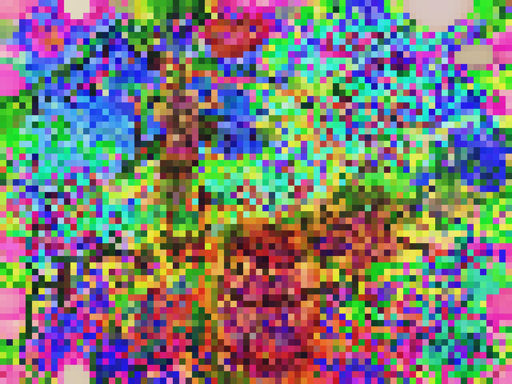
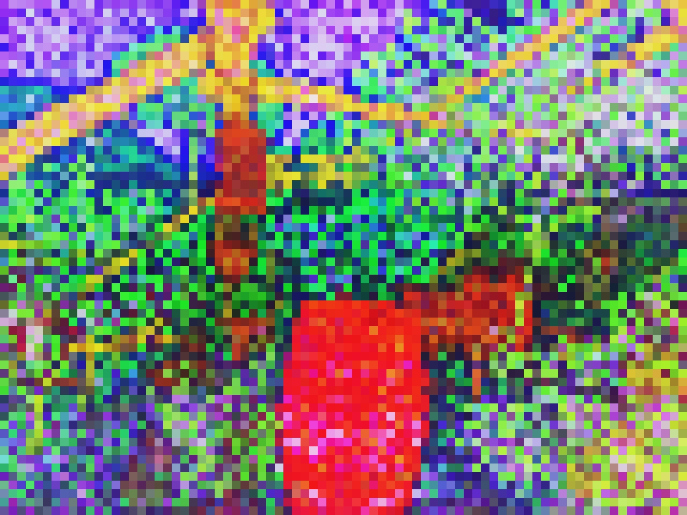
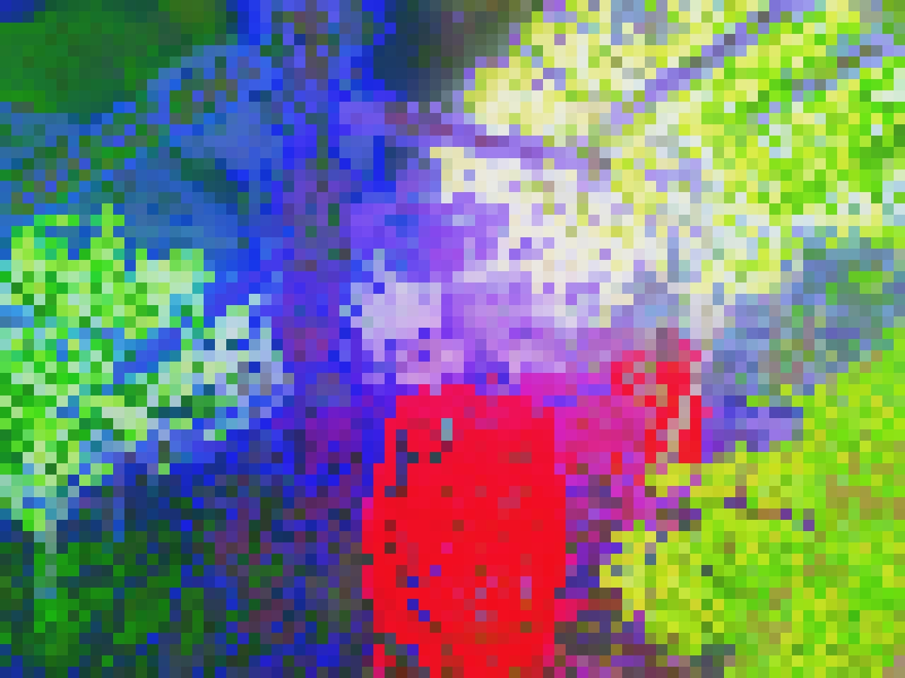
本节回答用户最初的问题:把 DINOv3 当作「前馈使用的视觉模型」,它的位置在哪里。
| 库内工作 | DINOv3 的角色 | 用的哪一档 | 交叉链接 |
|---|---|---|---|
| VGGT-Ω | 帧内编码器,配 register attention;明确记载 "DINOv3 p16 比 DINOv2 p14 token 少 ~25%"作为速度收益来源 | DINOv3 patch 16 | 3D-20260514-VGGT-Omega.html |
| PDF-GS | 语义级 distractor 检测:用 patch 特征的 L2 距离生成 mask M¹/M²;消融显示 DINOv3 特征优于 DINOv2、SSIM、PSNR | DINOv3 ViT-B/16 | 3D-20260414-PDF-GS.html |
| SAM 3D Body | 图像编码器,输出 $1280\times32\times32$ 特征图供 prompt encoder 使用 | DINOv3 ViT-H16-Plus(最大规格) | 3D-20260217-SAM-3D-Body.html |
| TripoSplat | DeG-VAE 的语义分支(纹理分支走 FLUX.2 VAE),双路特征 | DINOv3(档位未在笔记中记录,【待核实】) | 3D-20260508-TripoSplat.html |
| FFAvatar(ECCV 2026) | 冻结 DINOv3 + 可训练 DPT head——「冻编码器训头」范式的典型样例 | DINOv3 ViT-B/16 | 3DGS 多视角重建 SOTA 调研 |
| MAC-Splat(ECCV 2026) | 与 MASt3R 配合提供对应点 | DINOv3 | 3DGS 多视角重建 SOTA 调研 |
| Tele360 (清华 Yebin Liu 组) |
双分支:冻结 DINOv3 语义分支 + EdgeNeXt-xxs 纹理分支;并显式用 VGGT 蒸馏几何先验 | DINOv3 ViT-B | 前馈式高斯重建 2026 下半年调研 |
| VGGT(原生,2025) | 基线用的是 DINOv2——这正是 §12.6 的对照起点 | DINOv2 | 3D-20250314-VGGT.html |
patch 16 vs patch 14,同一分辨率下 token 数比 $(\frac{14}{16})^2 = 0.766$。因为多视图 transformer 的自注意力开销 $\sim O(N^2)$,前馈重建模型(VGGT-Ω、LocusGS 这类)最紧张的资源就是 token 数。库内 VGGT-Ω 笔记直接把这个记为「速度快 20~25%」的来源。
Table 12 的 ❄ 列:相对深度五个数据集上全面覆盖需要微调的 DAv2 ViT-g。含义是前馈重建不需要把 encoder 放进训练回路,省掉一整个「joint finetune encoder」的工程复杂度。
RoPE + box jittering 让编码器在训练分辨率之外不漂(Figure 17 给出每档的安全区间)。前馈重建常在训练时用小图、推理时上采样到高分辨率,这是硬需求。
21M / 29M / 86M / 300M / 840M 五档 ViT + 四档 ConvNeXt,覆盖从移动端到服务器的显存预算。且 Table 14 显示 ViT-L 已接近 7B 教师——不必为了精度去申请 7B 权重。
| 维度 | 具体数字 / 事实 | 对前馈重建的含义 |
|---|---|---|
| ViT-B/16 算力 | 47 GFLOPs @256 / 216 GFLOPs @512(Figure 16a) | 与一个中等规模的前馈聚合器同级,encoder 不是瓶颈 |
| ViT-L/16 算力 | 163 / 721 GFLOPs | 仍是 7B 教师(3550 / 14515)的 4.6% |
| 7B 教师算力 | 3550 GFLOPs @256 | 逐帧前向在 500 帧规模下不可接受,实际不用于前馈重建 |
| 特征维度 | DINOv3 家族 ViT-B/L/H+ 输出 768/1024/1280 维(patch 16);DINOv2 系 ViT-g 为 1536 维 | 决定下游 head 的输入通道;SAM 3D Body 用的 1280 维来自 H16-Plus |
| 推理分辨率对齐 | 最短边缩放到目标,长边取 patch 16 的整数倍 | 换档位必须重算对齐,否则特征图尺寸变化(§10 已给具体例子) |
| 权重获取 | ViT-S/S+/B/L/H+ ✅ HF 直接下载;7B 需申请 | 工程上从 ViT-L 起步 |
| 许可 | DINOv3 License Agreement(dinov3/LICENSE.md) | 商用前必须逐条读;本笔记不做法律判断 |
| 推理依赖 | PyTorch ≥ 2.7.1,官方仅测 Linux | WSL2 可用;Windows 原生没测过 |
本库此前的「前馈式大重建模型」专题(2026 下半年调研、3DGS 多视角重建 SOTA 调研)覆盖的是重建侧——聚合器怎么设计、高斯怎么解码、训练数据怎么组织。本笔记补上的是编码器侧那一半:
这样拆分的价值在于:它把「提升前馈重建质量」这件事从「必须改架构」变成了两条可独立推进的线。在不改动聚合器的前提下,仅替换/升级编码器就是一个低成本、可验证的增益来源。
| # | 问题 | 依据 | 可能的推进方向 |
|---|---|---|---|
| 1 | 稠密特征退化缺少理论解释。论文只能给出「patch 级一致性丧失」这个现象级描述 + 「CLS 与 patch 相似度上升」这个代理指标,没有说明为什么规模化必然导致它。 | §4 通篇是经验性的;论文称其为 "known yet unsolved issue" | 把 DINO 目标与 iBOT 目标的梯度冲突写成可分析的形式;这与 2D 检测里「分类头压倒定位头」是同类现象,可借鉴解耦式工作 |
| 2 | Gram teacher 的选取是经验性的,且有效窗口很窄。100k/200k 都行、1M 有害——但没有给出「什么时候的 teacher 才算早」的判据。 | Figure 9b;论文仅给出定性理由 | 用 Figure 5 的「CLS-patch 余弦相似度」曲线定义一个可量化的「退化起点」,把 teacher 选取从调参变成读数 |
| 3 | Gram 只作用于 global crop。local crop 上的 patch 结构没有被锚定。 | §4 原文 "We only compute this loss on the global crops" | 在 local crop 上也挂 Gram(需要 teacher 侧同 crop 的对应特征),看是否进一步提升细粒度任务 |
| 4 | 没有交代「为什么不用更大的 iBOT 权重从源头预防」。 | 见 §13 的空缺分析 | 与 LingBot-Vision 的路线正面比较:事后约束 vs 事前改目标 |
| 5 | 高分辨率外推有硬上限。测试到 $7168\times4096$,ViT-S+ 在 $3584\times2048$ 之后开始漂。 | Figure 17 | RoPE 的 base 与 rescale 是否可随分辨率自适应(目前是常数 100 / 2) |
DINOv3 是逐帧编码器。前馈重建需要的「同一 3D 点在不同视角的特征一致」是上层聚合器负责建立或外挂匹配器建立的。DINOv3 只提供「单帧内的好特征」。
可改进:把 Gram 的思想从「帧内 patch 相关性」推广到「跨视图 patch 相关性」——即用一个早期 checkpoint 的跨视图特征相关性当锚。这在概念上是 Gram anchoring 的自然延伸,但需要多视图数据与配对机制,论文未涉及。
patch 16 在低分辨率下 token 数不足(如 $256^2 \to 16\times16=256$ token),高分辨率下 token 数爆炸($4096^2 \to 65536$ token)。前馈重建常在 $448\times256$ 这种非方形输入上工作,需要对 patch 网格做特殊对齐。
可改进:论文的评估协议已经给出「最短边缩放到目标 + 长边取 patch 整数倍」的做法,但这会造成轻微的非等比拉伸(论文自己的例子:$960\times1712$ 是「slight horizontal stretch」)。对几何敏感的 3D 任务而言,这个拉伸是系统性误差来源。【推测】这是一个尚未被前馈重建社区认真对待的细节。
7B 需申请,而 Table 12/13 的最优结果全部来自 7B 或 7B 蒸馏档。对学术复现构成实际门槛。
缓解:Table 14 显示 ViT-L 已接近 7B(ADE20k 54.9 vs 55.9、NAVI 62.3 vs 64.4),代价是 1/22 参数。因此「用 ViT-L 顶替 7B」在多数前馈重建场景是可接受的近似。
LVD-1689M 私有、7B 训练细节只在论文层面公开、官方只提供 ViT-L/ImageNet-1k 的「快速上手」配置。
缓解:把 Table 1 的「聚类 + 检索 + seed 保留」配方作为方法而不是数据集来复用——这是本笔记给出的可操作路径。
DINOv2 的贡献是证明「数据策展 > 数据规模」;DINOv3 的贡献是证明「当规模足够大时,训练稳定性成为新瓶颈」,而且这个瓶颈不能靠调学习率解决,必须改目标函数。
Figure 1a 显示 SSL 在 IN1k 上已到平台期;真正的增量在稠密任务上,而稠密任务恰好是 3D 重建、分割、深度、对应的公共底座。DINOv3 的定位变化,本质上是「视觉基座」的定义从「分类特征」变成「空间特征」。
SAT-493M 卫星版用完全相同的超参,只换 RGB 统计量 + 缩短训练(100k 预训练 + 10k Gram + 8k 高分辨率),就在 GEO-Bench 上刷新 15 个任务中的 12 个。这说明 Gram anchoring 不是针对某个域的补丁,而是针对「长训练退化」这个通用病的药。
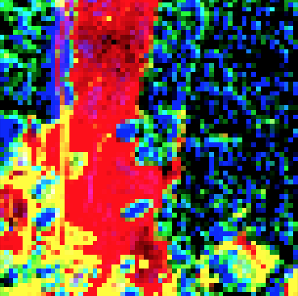
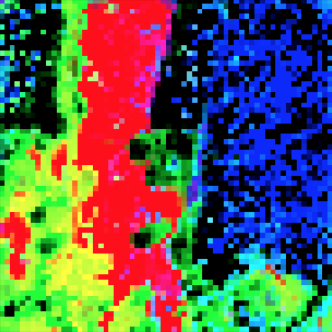
Meta AI(FAIR)。作者共 26 人,按 arXiv abs 页顺序:Oriane Siméoni, Huy V. Vo, Maximilian Seitzer, Federico Baldassarre, Maxime Oquab, Cijo Jose, Vasil Khalidov, Marc Szafraniec, Seungeun Yi, Michaël Ramamonjisoa, Francisco Massa, Daniel Haziza, Luca Wehrstedt, Jianyuan Wang, Timothée Darcet, Théo Moutakanni, Leonel Sentana, Claire Roberts, Andrea Vedaldi, Jamie Tolan, John Brandt, Camille Couprie, Julien Mairal, Hervé Jégou, Patrick Labatut, Piotr Bojanowski。
| 资源 | 链接 | 状态 |
|---|---|---|
| arXiv abs | arxiv.org/abs/2508.10104 | Submitted 13 Aug 2025 |
| arXiv HTML 全文(v1) | arxiv.org/html/2508.10104v1 | ✅ 可访问(本笔记所有表格/图注均以此为准) |
| 官方代码 | github.com/facebookresearch/dinov3 | ✅ 公开(训练 + 评测代码) |
| HuggingFace 权重 | collections/facebook/dinov3-… | ✅ 公开(ViT-S/S+/B/L/H+、ConvNeXt 四档、SAT-493M) |
| 7B 权重 | ai.meta.com/resources/models-and-libraries/dinov3-downloads/ | ⚠️ 申请制 |
| 官方站点 / Blog | ai.meta.com/dinov3/ · blog 文章 | ✅ 可访问 |
| Colab 示例 | pca.ipynb · segmentation_tracking.ipynb · dense_sparse_matching.ipynb · foreground_segmentation.ipynb | ✅ 仓库内提供 |
| 卫星版(下游应用) | Canopy Height Maps v2(WRI 合作);chmv2 已进 HuggingFace transformers | ✅ |
facebookresearch/dinov3 的 git clone --depth 1 工作副本(2026-10-16 克隆核对,副本已清理);所有 file:line 均可对照 upstream 仓库逐行核对。arxiv.org/html/2508.10104v1/ 下的原始相对路径下载(非猜测文件名),下载后做过双向 diff(笔记引用的 src 全集 vs images/2508.10104/ 文件全集)与 PNG/JPEG 文件头尾完整性校验。